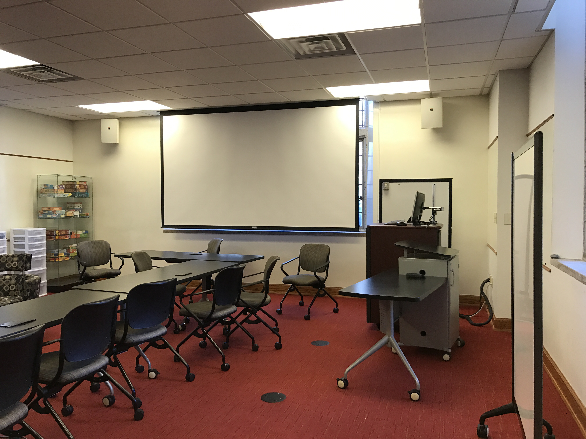
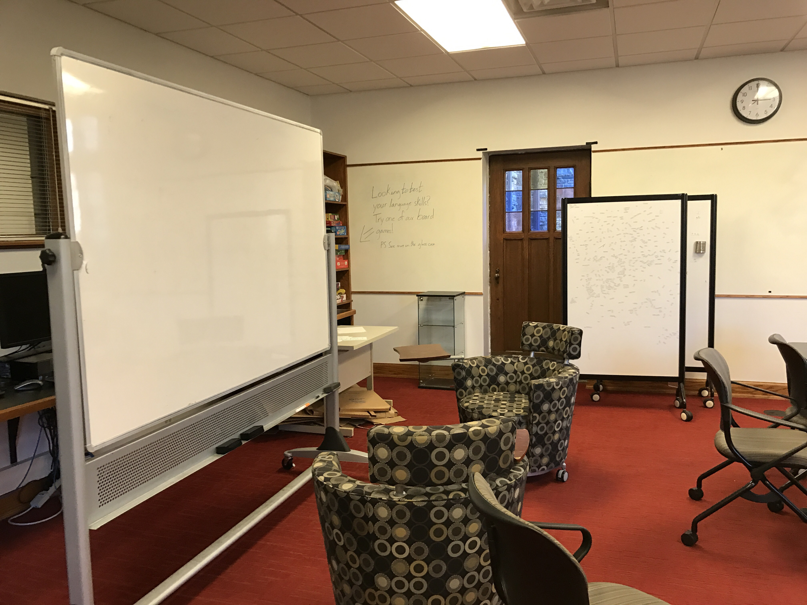
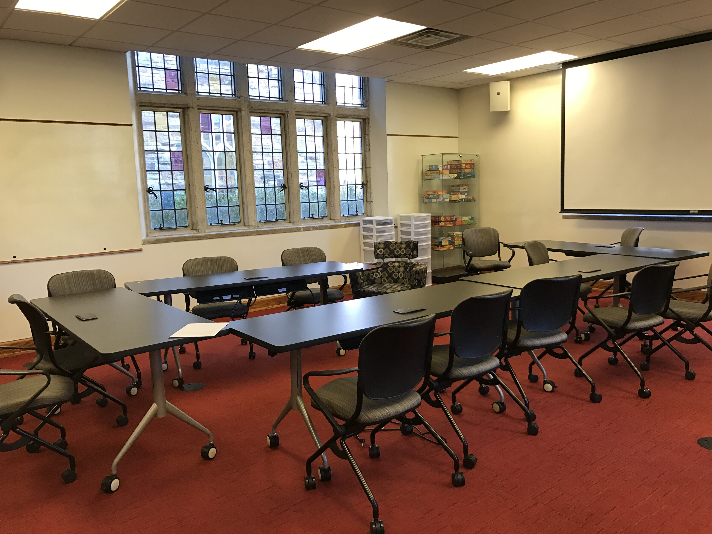

languagelearningspaces
languagelearninglab
1 / 3

Language Learning Lab
2 / 3

Language Learning Lab
3 / 3

Language Learning Lab
❮
❯
The language learning lab at Rhodes College is a flexible learning space that allows for many different language learning activities, with tables and chairs that move at the convenince of students and teachers"
remodel proposal
Vision Statement: A socially oriented, dynamic, learning space for student, educators, and community partners interesting learning language and culture.
- Fundraise for language center remodeling
- Purchase comfortable furniture
- Remove computers
- Commission community artists representing a variety of cultures for wall murals
- Reach out to community partners about offering cultural-based classes